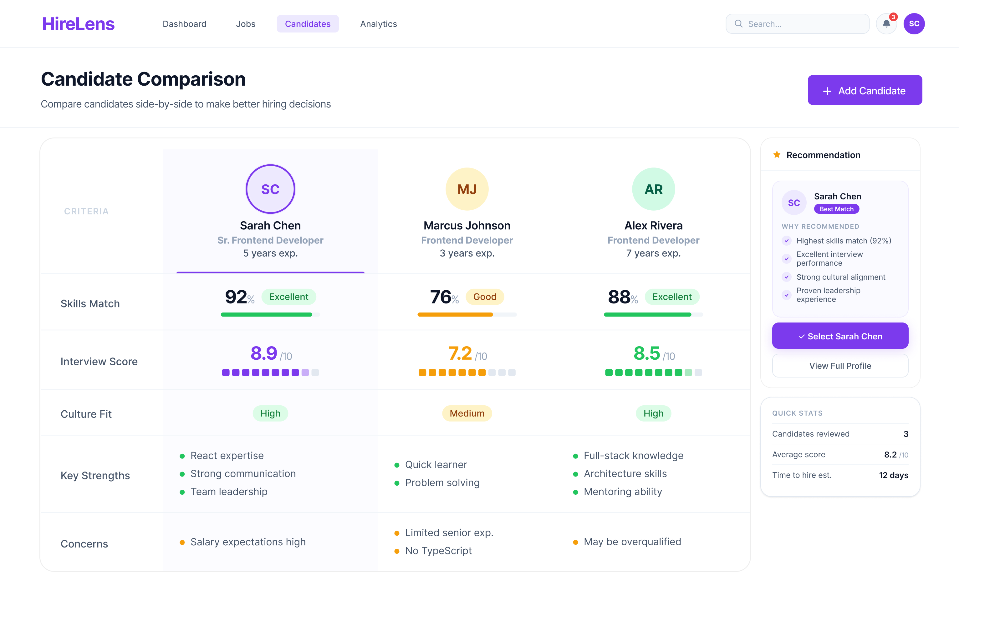

Case Study 02
SaaS · Hiring Intelligence
TechDoQuest · 2024 — 2026
HireLens.
Making hiring decisions clearer — a recruiter-first evaluation layer that turns scattered candidate data into structured, confident decisions.

Making hiring decisions clearer — a recruiter-first evaluation layer that turns scattered candidate data into structured, confident decisions.
On the surface, the ATS worked. Underneath, the actual hiring decision had nowhere to live.
While working on an ATS product, everything initially seemed functional. Recruiters could track candidates, move them across stages, and manage the pipeline efficiently. But when I looked closer at how hiring decisions were actually being made, a different pattern emerged.
The real challenge wasn't managing candidates — it was choosing between them. Recruiters often had multiple strong candidates in the pipeline, but the system didn't support structured comparison. Instead of evaluating clearly within the workflow, they were switching between profiles, relying on memory, and mentally processing too much information at once.
Even on platforms that offered basic comparison features, evaluation felt disconnected from the recruiter's actual workflow — inconsistent, mentally exhausting, and difficult to scale.
The issue wasn't missing data. Recruiters already had resumes, interview feedback, skills, experience, ratings, and candidate history — the real problem was fragmentation.
Before defining the solution, I explored how existing ATS platforms support recruiter evaluation. Most handled candidate management efficiently — but comparison and decision-making consistently felt secondary inside the workflow.
Instead of redesigning the entire ATS, the focus moved to one critical part of the experience.
The goal stopped being "manage applicants better". It became "help recruiters absorb, compare, and process information clearly during evaluation."
That shift changed the direction of the product. Rather than introducing more complexity, the solution focused on reducing decision fatigue, organizing candidate insights, and creating a more structured evaluation experience inside the existing workflow — not bolted on top of it.
A focused, scannable pipeline view — surfacing who needs attention next.
Side-by-side scoring across skills, interview, culture fit and concerns.
Structured feedback with shared rubrics, not free-form notes.
Clear recommendation with traceable reasoning — no black boxes.
A hiring intelligence platform designed to support recruiters during the most mentally demanding stage of hiring — evaluation and decision-making. Candidate profiles, interview insights, structured scoring, side-by-side comparison and hiring recommendations live inside one connected workflow.
The dashboard was designed as a centralized evaluation workspace rather than another ATS table. The interface intentionally feels lightweight and distraction-free — recruiters can track stages, monitor candidate progress, access evaluations, and review analytics without leaving the page.

Candidate information was restructured into a more readable, digestible format. Background, experience, strengths, skills and supporting documents are organised so recruiters can build context quickly — before moving into deeper evaluation.

Different interviewers often shared feedback in completely different formats, making evaluation difficult to compare fairly. HireLens introduced a structured feedback system that standardises ratings, comments and evaluation categories — so every panel grades on the same rubric.

Comparison became the centre of the experience. Instead of relying on memory or switching across multiple profiles, recruiters compare candidates side-by-side across skills match, interview score, culture fit, strengths and concerns. Visual scoring patterns and grouped insights help identify differences quickly while reducing the mental effort of every hiring decision.

The candidates list is the recruiter's daily home — filterable by role, stage, and experience, with score and stage visible at a glance. Multi-select feeds directly into comparison, so moving from triage to decision is a single click.

The constraints written at the top of every brief — and checked against before every handoff.
If a comparison row needs a legend to be read, the layout is wrong. Every signal earns its pixels.
01 / PillarRecruiters work in 10-second bursts between calls. Every primary action stays one click away.
02 / PillarEvery screen ends in a question with a verb attached. "What now?" is never left for the user to answer alone.
03 / PillarMatch scores show their math. Recommendations show their reasons. No black box gets to make a hire.
04 / PillarWorking on HireLens reinforced something I keep coming back to as a designer.
Hiring decisions don't fail because of missing data — they fail when too much data lands on a person at once. The most useful thing the product could do was think on the recruiter's behalf.
A shared rubric across panels did more for fairness and confidence than any new screen. Good evaluation isn't built from more functionality — it's built from consistent format.
The job wasn't to show recruiters more — it was to help them think more clearly and decide with confidence. That principle now shapes how I approach every dense product surface.
Sometimes the most valuable experience is the one that helps people think more clearly and make decisions with confidence.